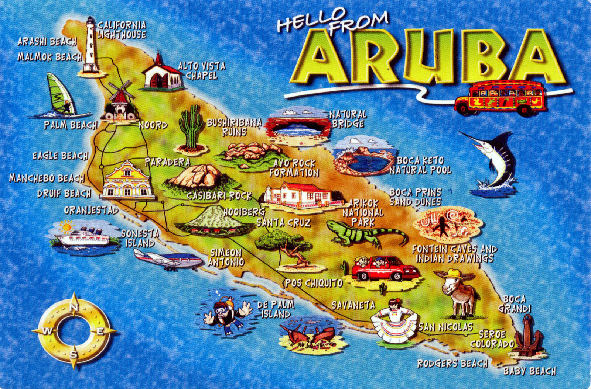
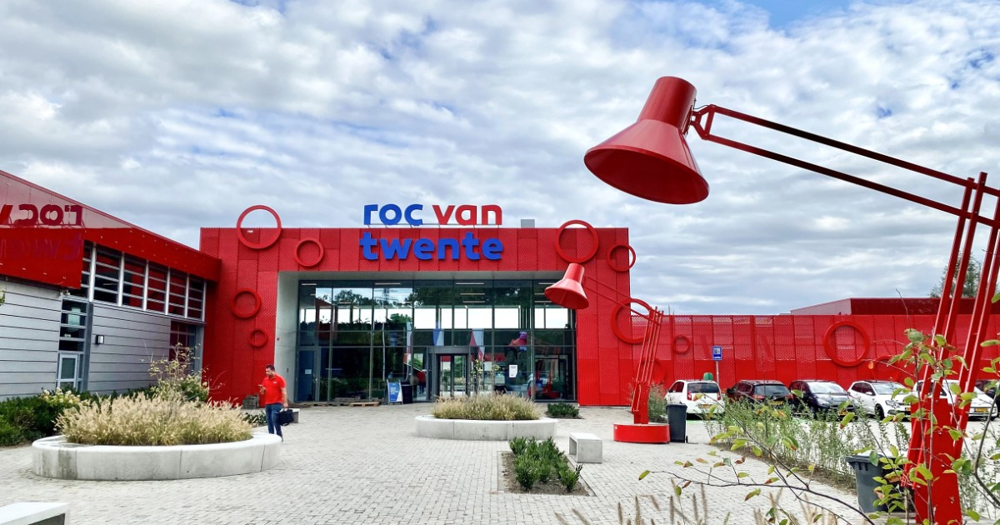

Joshua van Driel/Edwards

Hallo mijn naam is Joshua van Driel/Edwards (officieel op documenten is het edwards maar ik gebruik al mijn hele leven van driel dus ik moet dat uiteindelijk veranderen). Ik ben 17 jaar oud en mijn verjaardag is op 4 september en mijn geboortejaar is 2006. Mijn hobbies zijn fietsen, gamen en topografie.
Ik ben geboren op een klein eiland in de Caraïben genaamd Aruba, Aruba is een deelstaat van het Koninkrijk der Nederlanden, dus met nationaliteit ben ik een Nederlander.

ik woon nu ongeveer 4,5 jaar in europa, toen we voor het eerst hierheen verhuisden met mijn vader, moeder, mijn oudere zus en mijn jongere zus. we verhuisden naar nederland in een stad genaamd nijverdal en we woonden daar 2 jaar en mijn ouders besloten dat het huis dat we hadden te klein was voor 5 personen dus vonden we een heel goedkoop en groot huis in duitsland en we hebben hier 2,5 jaar gewoond, het enige nadeel is dat ik 22 km moet fietsen om naar school te gaan.
Ik heb ongeveer 7 jaar op de lagere school gezeten op Aruba en toen ik hier kwam ben ik begonnen met de middelbare school. De eerste 2 jaar van de middelbare school heb ik doorgebracht in Nijverdal op een school die Reggesteyn heet. Daarna zijn we naar Duitsland verhuisd en heb ik de laatste 2 jaar doorgebracht in Tubbergen op een school die canisius heet. En toen ik afstudeerde aan canisius besloot ik dat ik coderen en websites bouwen wilde studeren dus mijn beste optie was hier, de Sumpel.

Wat grappig is, is dat voordat ik ervoor koos om codering te gaan studeren, ik eerst timmerman wilde worden, maar aan het eind realiseerde ik me dat dat niet iets voor mij was, dus ging ik voor iets dat ik leuk vond en dat was coderen.